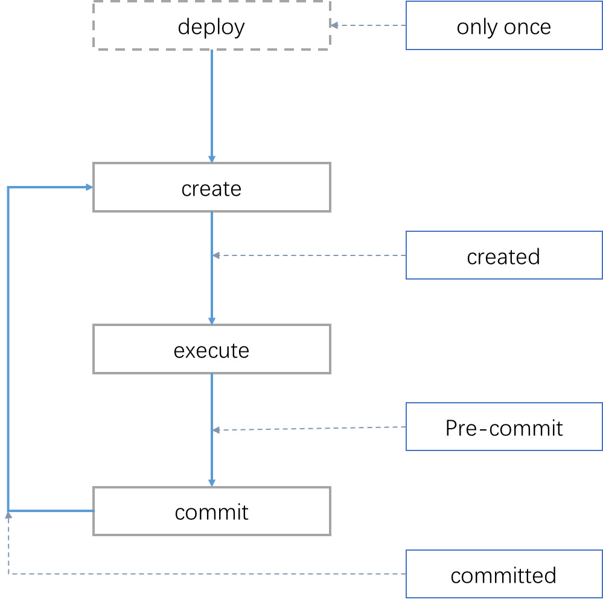
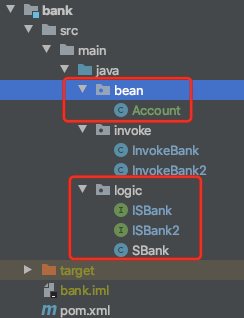

[主文件]HVM使用手册¶
HVM是趣链底层区块链平台自主研发的执行Java智能合约的执行引擎，通过实现轻量级的Java虚拟机，通过定制合约编写规范和结合区块链账本实现高可用的智能合约执行引擎。
配套设施¶
LiteSDK¶
LiteSDK是趣链开源的一款JavaSDK，可用于同区块链平台交互，部署和调用hvm合约，以及提供了对hvm参数编码和解码的功能，以下hvm的功能均可通过LiteSDK来进行使用。
开源项目地址：https://github.com/hyperchain/javasdk
LiteSDK使用文档： https://github.com/hyperchain/javasdk/tree/master/docs
hvm-sdk¶
hvm-sdk是用于编写hvm合约的工具包，包括以下介绍的合约主体类，InvokeBean接口和账本数据结构等，是编写合约项目必不可少的工具包。
公网maven仓库地址： https://mvnrepository.com/artifact/cn.hyperchain/hvm-sdk
可以使用maven或gradle来导入合约项目中:
maven:
<dependency>
<groupId>cn.hyperchain</groupId>
<artifactId>hvm-sdk</artifactId>
<version>1.1.5</version>
</dependency>
gradle:
compile group: 'cn.hyperchain', name: 'hvm-sdk', version: '1.1.5'
合约规范¶
合约接口¶
我们可以编写一个或多个合约接口来指定合约提供的功能，最终合约需要实现这些接口定义的功能，而每个合约接口都需要继承自 BaseContractInterface ， BaseContractInterface 是一个空接口，用于标识合约的作用。
一个合约接口的定义可以是如下的:
public interface ISBank extends BaseContractInterface {
boolean transfer(String from, String to, int value);
boolean withdraw(String from, int val);
boolean deposit(String from, int val);
}
合约主体类¶
我们规定一个继承了 BaseContract 并实现了一系列 BaseContractInterface 的子接口（合约接口）的类被称为一个合约主体类。该类内的所有实现自合约接口的方法代表合约方法，可以被外界调用。要求该合约主体类中 必须提供无参构造方法，且不建议在构造函数中写合约逻辑 ，为了解决可能存在的初始化的需求，我们提供了一个钩子函数 onInit() 来代替原构造函数的作用（见下文）。其中 BaseContract 提供了一系列特性和钩子函数的功能。
一个合约主体类的结构大概如下:
public class SBank extends BaseContract implements ISBank2, ISBank {
@StoreField
public HyperMap<String, Integer> accounts = new HyperMap<String, Integer>();
public SBank() {}
@Override
public void onInit() {}
@Override
public boolean transfer(String from, String to, int value) {...}
@Override
public boolean withdraw(String from, int value) {...}
@Override
public boolean deposit(String from, int value) {...}
@Override
public void onCreated() {}
@Override
public void onPreCommit() {}
@Override
public void onCommitted() {}
}
合约执行的生命周期¶
用户可以通过按需重写 BaseContract 中四个钩子方法 onInit() 、 onCreated() 、 onPreCommit() 和 onCommitted() 来在合约生命周期中的不同阶段加入自定代码。
合约的生命周期如下：
deploy ：合约部署阶段，该阶段只会在合约部署时出现一次。
create ：构建合约对象阶段，无论部署还是调用均有该阶段。
execute ：执行指定的合约方法阶段，该阶段仅仅在调用合约时出现。
commit ：持久化阶段会自动扫描合约对象所有的持久化变量并做持久化操作（即数据真正上链），该阶段仅仅在调用合约时出现。
各钩子函数的调用顺序如下：
部署合约 : onInit() -> onCreate() -> onPreCommit() -> onCommitted()
调用合约 : onCreate() -> onPreCommit() -> onCommitted()
> 注：上面提到的四个钩子函数除了`onInit()`外，无论是在合约部署还是合约调用的时候均会被调用。

用户可以在钩子函数中添加自定义的逻辑，比如可以在 onInit() 中代替空参空体的构造函数初始化合约属性，在 onCreate() 中添加权限检查或者非持久化变量的初始化，在 onPreCommit() 中添加执行结果的校验，在 onCommitted() 中添加日志的打印等。
一般而言不建议重写 BaseContract 中的钩子函数，增加钩子函数后会带来不必要的性能开销，一般可用于调试。如不需要使用则可以忽略钩子函数。
合约功能bean¶
合约中需要用到一些数据结构的定义，对象转换的bean等等时，编写这些类时需要注意必须提供 空参构造函数 ，并且重写 hashCode() 函数和 equals() 函数。
例如SBank中Account账户bean的编写:
public class Account {
private String name;
private int amount;
@Override
public int hashCode() {
...
}
@Override
public boolean equals(Object o) {
...
}
}
合约持久化属性¶
并非所有的合约属性都会被保存到区块链账本中，我们定义了合约持久化注解 @StoreField 来表示该合约属性是需要保存到区块链账本当中的，StoreField注解只能用于修饰合约主类当中的属性，不能用于修饰其他bean文件当中的属性，合约主类中用StoreField注解修饰的形式如下:
@StoreField
public String name = "sbank";
@StoreField
public HyperMap<String, Integer> accounts = new HyperMap<>();
使用StoreField修饰后的属性将在合约执行完成后保存数据到账本中，在合约中执行时也将从账本内获取最新值，StoreField注解还用于 配合HyperMap、HyperTable、HyperList和NestedMap 等账本数据结构使用，具体说明可以参看后续的合约账本数据结构内容。
而对于合约中非@StoreField注解修饰的属性值，则在每次合约调用时初始化为默认值，例如:
public String key;
public int n = 1;
合约结构¶
上述是合约规范的介绍，了解了上述的编写规则后，我们可以完成一个简单的合约项目的构建。我们以一个银行积分转账的项目为例，来给出合约项目demo。合约项目我们推荐使用maven来构建，一个合约项目主要就包括了合约接口、合约主类和bean类，以及maven项目的pom.xml文件，用于执行合约主类和要打包的合约class文件。最终一个项目的结构大概如下(具体逻辑可以查看合约demo文件)：

下面简单介绍一下样例代码：
Sbank.java : 合约主体类。需要继承 BaseContract 父类。合约主要功能是模拟了一个银行业务，提供了存钱、取钱和转账接口。
ISBank.java : 交付接口类，继承了 BaseContractInterface 。用来交付给应用程序开发者，包含了合约拥有者想要对应用程序1（假设）暴露的接口。
ISBank2.java : 交付接口类，继承了 BaseContractInterface 。用来交付给应用程序开发者，包含了合约拥有者想要对应用程序2（假设）暴露的接口。
pom.xml : 用户需要根据编写的合约主体类修改pom中 <main-class></main-class> 属性，值应该为 合约主体类的全限定类名 。
pom.xml的样例如下:
<?xml version="1.0" encoding="UTF-8"?>
<project xmlns:xsi="http://www.w3.org/2001/XMLSchema-instance"
xmlns="http://maven.apache.org/POM/4.0.0"
xsi:schemaLocation="http://maven.apache.org/POM/4.0.0 http://maven.apache.org/xsd/maven-4.0.0.xsd">
<groupId>com.hyperchain</groupId>
<artifactId>sbank</artifactId>
<version>1.0</version>
<modelVersion>4.0.0</modelVersion>
<build>
<plugins>
<plugin>
<groupId>org.apache.maven.plugins</groupId>
<artifactId>maven-jar-plugin</artifactId>
<version>3.1.0</version>
<executions>
<execution>
<phase>package</phase>
<goals>
<goal>jar</goal>
</goals>
<configuration>
<classifier>bank</classifier>
<!-- 用于配置合约打包的java文件的包路径，应将合约执行过程中用到的类文件都打包进去 -->
<includes>
<include>**/logic/**</include>
<include>**/bean/**</include>
</includes>
<archive>
<!-- 用于配置合约主类，必须提供合约主类全类名 -->
<manifestEntries>
<Main-Class>logic.SBank</Main-Class>
</manifestEntries>
</archive>
</configuration>
</execution>
</executions>
</plugin>
</plugins>
</build>
<dependencies>
<dependency>
<groupId>cn.hyperchain</groupId>
<artifactId>hvm-sdk</artifactId>
<version>1.1.5</version>
</dependency>
</dependencies>
</project>
最终通过 mvn package -DskipTests 即可打包出合约jar包。
注意事项¶
合约中的任意类以及InvokeBean类的包名都不能以 cn.hyperchain、com.google.gson、gnu、java、sun 这些包名开头，否则hvm将拒绝部署和调用；
合约打包时pom.xml文件中一定要有<Main-Class>配置
合约必须继承自BaseContract虚类
Demo¶
【完整的合约项目demo文件，参考HVM使用手册——HVM合约demo文件——hvm-manual-demo的sbank合约】
合约调用¶
调用合约之前需要先部署合约，部署合约时使用的即为合约jar包，部署成功后将获得一个合约地址，对于合约调用都需要基于部署的合约地址。对于合约的部署和调用则请结合SDK的使用说明来使用，这里不再展开讲解。
hvm合约提供了两种调用的方式，分别是编写InvokeBean类和直接调用合约方法的形式。
InvokeBean¶
我们将InvokeBean称为合约调用类，通过InvokeBean形式调用合约需要编写一个合约调用类，且该调用类需要实现 BaseInvoke 接口，该接口的具体实现如下:
// 泛型T表示返回的类型，V表示合约类
public interface BaseInvoke<T, V extends BaseContractInterface> {
T invoke(V obj);
}
实现接口的 invoke 来编写执行合约的具体逻辑， obj 即为合约对象，其中对于该调用类必须有一个空参空体的构造函数。
一次合约交易是以一个InvokeBean内实现的invoke方法逻辑决定的，可以在invoke方法内调用一个或多个合约接口的方法，InvokeBean作为交易调用参数传入到SDK中，一个InvokeBean的invoke方法调用逻辑为原子的。
泛型T表示返回的类型，即最终这笔合约调用交易的返回结果；
泛型V表示合约接口，用于在invoke方法内调用合约主体类的实现逻辑。
以调用之前 SBank 为例，编写 BankInvoke 来进行转账操作，调用类具体示例如下:
public class BankInvoke implements BaseInvoke<Boolean, ISBank> {
/**
* 调用参数(也可使用单个Bean)
*/
public String from;
public String to;
public int value;
// 必须提供的空参空体构造函数
public BankInvoke() {}
// 方便初始化参数的构造函数
public BankInvoke(String from, String to, int value) {
this.from = from;
this.to = to;
this.value = value;
}
// 接口实现
@Override
public Boolean invoke(ISBank obj) {
boolean a = obj.transfer(from, to, value);
if (a) {
// 转账成功在进行后续操作
obj.deposit(from, value);
}
return a;
}
}
我们以LiteSDK中构造使用InvokeBean的调用交易为例:
Transaction transaction = new Transaction.HVMBuilder(account.getAddress()).invoke(contractAddress, invokeBean).build();
上述例子中contractAddress为合约地址，invokeBean为我们编写的合约调用类的实例。
直接调用¶
直接调用相对于InvokeBean的优势是不需要编写额外的调用类，可以通过合约方法名直接调用合约方法，相对而言更加简单、高效，但是一笔交易只能调用一个合约方法，不能像InvokeBean一样对多个合约方法形成一个原子调用。
直接调用则使用SDK提供的编码类，通过传入合约方法名称和要调用的合约方法的参数，通过SDK完成编码后，在封装成交易发送给区块链平台。
我们以之前编写的SBank中的transfer方法为例，说明使用LiteSDK的调用形式。
合约方法:
public boolean transfer(String from, String to, int value) {
......
}
使用LiteSDK中构造上述方法的直接调用的参数如下:
InvokeDirectlyParams invokeDirectlyParams = new InvokeDirectlyParams.ParamBuilder("transfer")
.addString("AAA")
.addString("BBB")
.addint(10)
.build();
注意直接调用函数参数类型和数量必须与合约方法里面声明的类型一致，否则会出现找到不方法定义的错误，不支持参数的自动拆箱和装箱， 比如Integer 和int不能混用。
最终构造出直接调用的交易:
Transaction transaction = new Transaction.HVMBuilder(account.getAddress()).invokeDirectly(contractAddress, invokeDirectlyParams).build();
上述例子中contractAddress为合约地址，invokeDirectlyParams为我们编写的直接调用合约方法参数。
LiteSDK直接调用InvokeDirectlyParams的Builder类中增加参数的方法和Java参数类型的对应关系如下：
增加参数方法 |
对应Java参数类型 |
|---|---|
addInteger |
Integer |
addInt |
int |
addShort |
Short |
addshort |
short |
addLong |
Long |
addlong |
long |
addByte |
Byte |
addbyte |
byte |
addFloat |
Float |
addfloat |
float |
addDouble |
Double |
adddouble |
double |
addCharacter |
Character |
addchar |
char |
addBoolean |
Boolean |
addboolean |
boolean |
addString |
java.lang.String |
addObject(Class<?> clazz, Object obj) |
java.lang.Object |
addParamizedObject(Class<?>[] classes, Object obj) |
Colle ction或Map接口的实现类 |
需要特殊说明的是addObject(Class<?> clazz, Object obj)和addParamizedObject(Class<?>[] classes, Object obj)两个接口：
addObject(Class<?> clazz, Object obj)
需要注意的是支持没有泛型的Java类型，添加参数时需要指定Java的class，一般用于合约中bean类的传参。例如:
addObject(Account.class, new Account())
addParamizedObject(Class<?>[] classes, Object obj)
泛型类型，仅支持实现Collection或Map的接口类型，且需要把泛型类型也添加到classes中，不支持泛型类型嵌套泛型类型。泛型需要按顺序增加，Collection接口只能带一个泛型，Map接口只能带两个泛型。例如：
增加ArrayList:
ArrayList<Account> accounts = new ArrayList<>();
InvokeDirectlyParams invokeDirectlyParams = new InvokeDirectlyParams.ParamBuilder("transfer").addParamizedObject(new Class[]{ArrayList.class, Account.class}, accounts).build();
增加HashMap，Map类型的泛型应按K-V的顺序给:
HashMap<String, Account> accountHashMap = new HashMap<>();
InvokeDirectlyParams invokeDirectlyParams = new InvokeDirectlyParams.ParamBuilder("transfer").addParamizedObject(new Class[]{HashMap.class, String.class, Account.class}, accountHashMap).build();
以下情况的类型添加则是**不被允许**的:
ArrayList<ArrayList<Account>> accounts = new ArrayList<>();
HashMap<String, ArrayList<Account>> accountHashMap = new HashMap<>();
demo¶
提供的demo还是以SBank为例，增加了单元测试，提供的了通过InvokeBean和直接调用两种形式来调用合约的transfer方法:
InputStream is = FileUtil.readFileAsStream(jarPath);
DefaultHttpProvider defaultHttpProvider = new DefaultHttpProvider.Builder().setUrl(defaultURL).build();
ProviderManager providerManager = ProviderManager.createManager(defaultHttpProvider);
ContractService contractService = ServiceManager.getContractService(providerManager);
AccountService accountService = ServiceManager.getAccountService(providerManager);
Account account = accountService.genAccount(Algo.ECRAW);
Transaction transaction = new Transaction.HVMBuilder(account.getAddress()).deploy(is).build();
transaction.sign(account);
ReceiptResponse receiptResponse = contractService.deploy(transaction).send().polling();
String contractAddress = receiptResponse.getContractAddress();
System.out.println("contract address: " + contractAddress);
Transaction transaction1 = new Transaction.HVMBuilder(account.getAddress()).invoke(contractAddress, new InvokeBank("AAA", "BBB", 10)).build();
transaction1.sign(account);
ReceiptResponse receiptResponse1 = contractService.invoke(transaction1).send().polling();
String decodeHVM = Decoder.decodeHVM(receiptResponse1.getRet(), String.class);
System.out.println("decode: " + decodeHVM);
InvokeDirectlyParams invokeDirectlyParams = new InvokeDirectlyParams.ParamBuilder("transfer")
.addString("AAA")
.addString("BBB")
.addint(10)
.build();
Transaction transaction2 = new Transaction.HVMBuilder(account.getAddress()).invokeDirectly(contractAddress, invokeDirectlyParams).build();
transaction2.sign(account);
ReceiptResponse receiptResponse2 = contractService.invoke(transaction2).send().polling();
decodeHVM = Decoder.decodeHVM(receiptResponse2.getRet(), String.class);
System.out.println("decode: " + decodeHVM);
完整例子代码可获取源码包后直接运行体验，需在项目根目录下先运行mvn package。
【完整的合约项目demo文件，参考HVM使用手册——HVM合约demo文件——hvm-manual-demo的sbank合约】
合约账本结构¶
为方便合约中和账本的交互，以及提供多样化的合约功能，能让合约编写者像使用本地Java集合一样来操作区块链账本，目前hvm中提供了HyperTable，HyperMap、HyperList和NestedMap四种类型，当合约中需要保存持续增长的数据的时候，都应考虑使用提供的账本数据结构。
HyperTable¶
HyperTable通过将账本kv数据抽象为数据表格的形式提供服务，可以精确保存和读取每一行数据的每一个字段，提供了高效的数据写入和查询功能。
【HyperTable使用详情参考HVM使用手册文件 - 合约账本数据结构使用手册 - HyperTable】
HyperMap¶
HyperMap实现了Java中Map接口，可以操作Map一样来操作账本数据，适合以kv形式保存的数据，key作为唯一索引，需要注意的是value数据不应该是持续增长的类型。
【HyperMap使用详情参考HVM使用手册文件 - 合约账本数据结构使用手册 - HyperMap】
HyperList¶
HyperList实现了Java中的List接口，可以操作List一样来操作账本数据，保持插入有序，以数据的index下标作为索引，需要注意的是HyperList不适合做为持续保存的数据结构，更适合做为队列，需要消费过期数据。
【HyperList使用详情参考HVM使用手册文件 - 合约账本数据结构使用手册 - HyperList】
NestedMap¶
NestedMap和HashMap一样，实现了Map接口，所以其提供的功能与HashMap基本一致，不过在部分接口的使用上还是略有差别，更适合做复杂的嵌套数据。具体请查看直接接口章节。
【NestedMap使用详情参考HVM使用手册文件 - 合约账本数据结构使用手册 - NestedMap】
合约内置方法功能¶
hvm在合约基类BaseContract中提供了许多内置方法，合约编写者可在合约主类中通过this引用直接调用。
【HVM合约内置方法使用详情参考HVM使用手册文件 - HVM合约内置方法和工具方法使用手册】
工具方法¶
hvm合约中提供了一些不同类型的工具方法，包括密码学套件、字节转换工具等，相较于原生JDK实现有较高的性能
【HVM合约工具方法使用详情参考HVM使用手册文件 - HVM合约工具方法和工具方法使用手册】
合约升级¶
合约升级介绍¶
HVM在LiteSdk中为用户提供了合约升级的功能，即可以用新的合约覆盖旧的合约。其升级操作示例如下:
Transaction transaction = new Transaction.HVMBuilder(account.getAddress()).upgrade(contractAddress, payload).build();
示例中的contractAddress为原合约地址，payload为新合约的代码。两者均为String类型。
playload可以通过合约的jar文件获得，获取方式示例如下:
InputStream fis = FileUtil.readFileAsStream(jarPath);
String payload = Encoder.encodeDeployJar(fis);
合约升级需要注意事项：¶
权限
与冻结合约和解冻合约一样，合约升级需要权限。只有创建合约的账户才有升级该合约的权限。
合约类原有的属性不能删改
合约升级支持对合约类中方法的增加、修改和删除。也支持在合约类中增加属性，但是不允许删除或修改原有属性。
以下场景是被允许的：
新合约增加了新的成员变量
新合约增加了新的函数
新合约删除和修改了旧合约的函数
如果类是enum，enum可以新增新的常量，但不可以删除已有的常量
类里面引用的其他类可以增加成员变量
数组或者HyperMap，HyperList里面的类增加成员变量
HyperMap的泛型key为String类型的情况下，支持升级为NestedMap，泛型类型需保持不变
以下场景是不被允许的：
新合约删除了旧合约的成员变量
新合约修改了旧合约成员变量的名字
enum减少常量
类里面引用的其他类减少成员变量
数组或者HyperMap，HyperList里面的类减少成员变量
StoreField属性类型被修改(除部分HyperMap升级为NestedMap的场景)
合约升级demo¶
完整例子代码可获取源码包后直接运行体验，包中已经包含了新旧两份合约的jar文件。例子中的代码为新合约，其相对旧合约的改变在代码中均标有注释。
【HVM合约升级使用详情参考HVM使用手册文件 - HVM合约demo文件 - hvm-manual-demo的contractUpdate目录 】
hvm-abi插件¶
hvm提供了类似Solidity的二进制调用接口abi文件，通过abi我们可以提供给非LiteSDK实现的SDK调用hvm合约，目前提供了gosdk的支持。
hvm-abi插件支持了对hvm合约进行字节码增强，实现合约的storefiled在hvm中懒加载的功能。
【HVM abi使用详情参考HVM使用手册文件 - HVM ABI插件使用手册】
JDK支持列表¶
【JDK支持列表使用详情参考HVM使用手册文件 - 附录 HVM JDK支持列表】